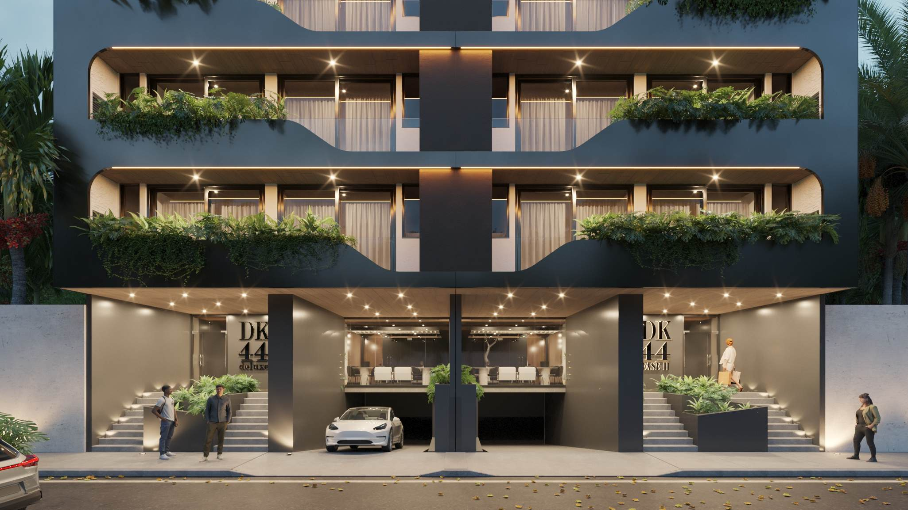

seguidores observados en el metadato público de Instagram.

Análisis preparado para Mónica · 9 agosto 2026
DK ya genera atención.
Mónica debe quedarse en la memoria.
La oportunidad urgente no es elegir entre marca personal y DK del Karibe. Es convertir a Mónica en la voz reconocible, a DK en su plataforma de contenido y a DK44 en una campaña que produzca conversaciones atribuibles.
publicaciones observadas: ya existe un activo editorial.
el dominio enlazado desde la marca sigue sin página comercial.
ruta propuesta: contenido DK → Mónica → propiedad → WhatsApp.
El punto de partida
La materia prima ya existe.
Faltaba darle una voz.
DK del Karibe aporta audiencia y continuidad editorial; DK44 aporta imágenes y argumentos comerciales. La nueva capa hace que Mónica conecte ambos activos y sea la persona a quien el prospecto recuerda y consulta.
Todos los renders de esta presentación proceden del brochure público de DK44. Para una campaña definitiva conviene confirmar por escrito su autorización de uso.
Arquitectura de marca
No es Mónica o DK.
Es Mónica con DK.
Cada elemento cumple una función diferente. La sinergia evita que la persona desaparezca detrás del proyecto y que la marca dependa de una sola preventa.
MA
Mónica Arteaga
Voz, criterio, atención y seguimiento directo.

DK del Karibe
Contenido, alcance y descubrimiento de oportunidades.
44
DK44 destacado
Producto, precio, amenidades y conversación contextual.
Lo que encontramos
Seis fugas que frenan
una relación posible.
Abre cada hallazgo para ver el problema y la respuesta que ya incorporamos en la propuesta.
La persona toca el enlace cuando su interés está más alto, pero no encuentra precio, ubicación, amenidades ni una siguiente acción. Además de perder el lead, el error reduce confianza en la marca.
Resuelto en la propuestaLa nueva landing recupera esa intención desde el primer segundo y presenta una acción clara hacia WhatsApp.
@dkdelkaribe comunica una marca y distintos tipos de producto. Sin una capa personal, el usuario puede recordar el proyecto o el logo, pero no necesariamente a la asesora que dará seguimiento.
Resuelto con arquitecturaMónica abre y cierra el recorrido; DK del Karibe se mantiene visible como plataforma y DK44 como selección destacada.
Precio, entrega, superficies y planes de pago aparecen en diferentes portales. Algunas fuentes incluso discrepan entre 26 y 52 unidades, lo que obliga a validar fase e inventario vigentes.
Resuelto con control editorialLa landing reúne los datos esenciales y marca precios y condiciones como referencias sujetas a confirmación, sin convertir una inconsistencia en promesa.
Un “hola, vi tu Instagram” obliga a descubrir de nuevo qué interesó a la persona. Esa ida y vuelta añade fricción y hace más lento el seguimiento.
Resuelto por intenciónCada botón identifica la landing personal y distingue DK44, otra preventa, renta, presupuesto y tipo de consulta.
El brochure ya reconoce audiencias en español e inglés. Sin una experiencia bilingüe en la web, el contenido comercial no acompaña esa realidad del mercado.
Resuelto sin duplicar páginasES/EN cambia en un toque y adapta narrativa, opciones y mensajes que salen hacia WhatsApp.
Con el dominio sin destino no se pueden distinguir visitas, idioma, interés por sección ni clics que realmente abren una conversación con Mónica.
Lista para instrumentarEl prototipo emite eventos para idioma, CTA, intención y formulario con la fuente “personal_landing”; falta conectar la plataforma analítica.
La transformación
El mismo interés.
Una persona al centro.
Cambia entre ambas vistas. En “Ahora” puedes navegar la landing real sin salir del análisis.
DK
@dkdelkaribeDK44 · preventas · rentas
 Contenido que sí genera interés
Contenido que sí genera interés404
No se encontró esa página
Sin proyecto · sin precio · sin CTA
Hola, vi un departamento…
¡Hola! ¿Cuál viste?
Ya no recuerdo 😕
El clic existe, pero la intención se rompe antes de convertirse en conversación.
InstagramReelsReferidosGoogleWhatsApp
Todo apunta a la experiencia personal de Mónica
La propuesta abre con Mónica, su relación con DK del Karibe y una acción personal inmediata.
El tráfico recuerda a Mónica, reconoce DK, entiende el producto y conversa con contexto.
Más material, mejor ritmo
Una galería que vende
la experiencia completa.
Fachada, servicio, trabajo, bienestar, rooftop e interiores aparecen como capítulos de una misma historia. Toca cualquier imagen para ampliarla.
Lo que ya quedó construido
La marca personal, convertida
en una experiencia real.
Mónica como ancla
El nombre personal abre, explica la propuesta y recibe la conversación.
DK como plataforma
La marca conserva su valor editorial y deja de competir con la asesora.
WhatsApp atribuible
El mensaje identifica origen, intención, presupuesto y campaña consultada.
DK44 como campaña
Precio, producto, amenidades, tipologías y pagos mantienen profundidad comercial.
Confianza sin exagerar
Las cifras variables se declaran como referencia y se evita prometer retornos.
ES / EN personal
Interfaz, narrativa, formulario y WhatsApp cambian juntos en una sola URL.
Antes del dominio definitivo
Cuatro decisiones para
publicar con certeza.
La propuesta está lista para revisión visual. Estos son los únicos puntos que deben cerrarse antes de usarla como fuente comercial oficial.
- 01
Identidad personal
Validar biografía, fotografía profesional, tono de voz y la relación pública entre Mónica y DK del Karibe.
- 02
Inventario y condiciones
Confirmar fase, unidades, precio, entrega y esquemas autorizados de DK44.
- 03
Permisos y aviso legal
Autorizar renders y definir responsable comercial, correo y aviso de privacidad.
- 04
Dominio y medición
Apuntar el dominio vigente, configurar analítica y etiquetar el enlace de Instagram.
Siguiente paso recomendado
De propuesta a canal
de captación medible.
Confirmar identidad
Mónica valida bio, retrato, relación con DK, inventario y datos legales.
Recuperar el dominio
La landing sustituye el 404 y se convierte en el enlace único de la bio.
Medir conversaciones
Se observan clics, idioma e intención para mejorar la conversión real.

La solución ya se puede recorrer
Mónica, tu nombre ya tiene
un destino propio.
DK del Karibe conserva su fuerza y DK44 su profundidad. La diferencia es que ahora cada recorrido empieza y termina contigo.
Transparencia
Fuentes revisadas
- dkdelkaribe.com.mx — HTTP 404 y “No se encontró esa página” verificados el 9 de agosto de 2026.
- Instagram @dkdelkaribe — metadato público observado el 9 de agosto de 2026: 8,089 seguidores y 904 publicaciones.
- Brochure bilingüe DK44 — producto, ubicación, amenidades, imágenes y tipologías.
- Okan Real Estate — precio y entrega de referencia.
- Riviera Maya Broker — esquemas de pago publicados.